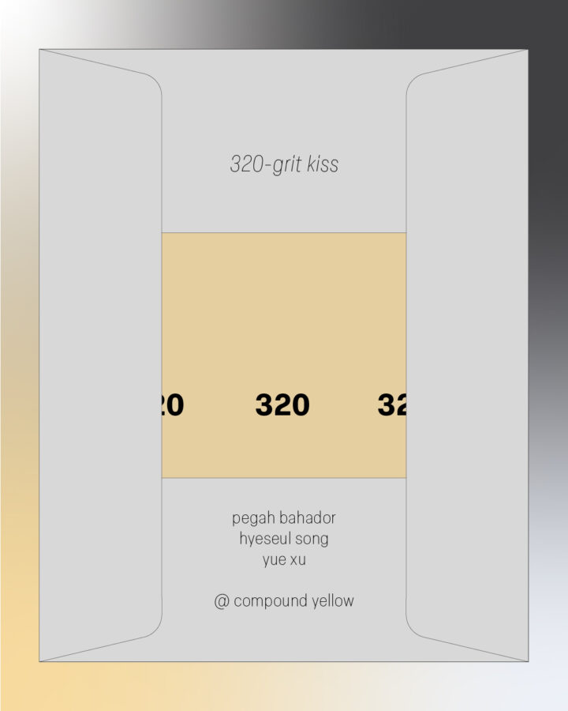

320-grit Kiss
In 320-grit Kiss Pegah Bahador, Hyeseul Song, and Yue Xu, have organized the space to reflect on desire, tactility and surface. Including drawings, photographs, sculptures and installations, they explore desire as an immanent assemblage that slides along skins, images, screens and inscriptions. Many of the pieces are gathered as temporal arrangements that are packable or emphasize mobility through sites, and therefore study surface as time.
The title borrows from sandpaper: 320 grit, a medium grit, neither coarse nor smooth, to prepare, to soften and make a surface ready. Skin, too, is a surface that rubs, presses, and carries memory. Weightless, mobile and tactile, suspended and remembered, it lives on the surface and is of the surface. It is closeness without access.
Pegah Bahador (b. 1998, Tehran) practices doori o doosti, a Farsi term that translates to ‘distance and friendship,’ and emphasizes how the two coexist and (even sonically) intertwine. This epistolary practice suggests writing as an act in translation, or with an accent; and is itself a type of correspondence between them and their subjects. They work between sculpture, drawing and text to emphasize ground and language displacement. They earned their BFA at Tehran University of Art and are currently pursuing their MFA in Art, Theory, Practice at Northwestern University.
Hyeseul Song (b. 1995, Seoul) is a visual artist whose practice centers the overlooked objects and the material traces embedded within built environments, working across sculpture, photography, and digital media. Trained in both architecture and sculpture, she approaches the built world as an archaeological site—one where layers accumulate, disappear, and transform through the shifting pressures of development, utility, and time. Song holds a Bachelor of Architecture from Sungkyunkwan University (2021) and a BFA in Sculpture from the School of the Art Institute of Chicago (2023), and she is currently pursuing an MFA at the University of Chicago.
Yue Xu (b. 1995, Guangzhou) is an artist based in Chicago. Xu is a multimedia artist working with sculpture, installation, drawing, and artists’ books to point toward forces—often invisible or taken for granted—that structure everyday life. Her practice engages with the latent poetics of overlooked landscapes, where mundane encounters rupture unexpectedly, revealing moments of estrangement. These disruptions awaken dormant visual memories, destabilizing familiarity and summoning fleeting remnants of the past. Xu earned her MFA from the School of the Art Institute of Chicago in 2021 and her BFA from Guangzhou Academy of Fine Arts in 2018.
Opening reception: 320-grit Kiss
Saturday January 31st
2pm to 5pm